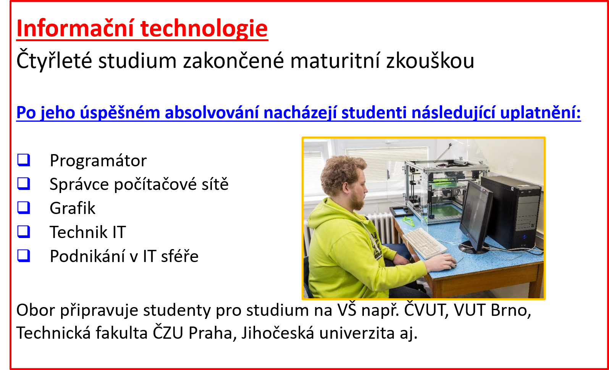

Studijní obor s maturitou zaměřený na hardware počítačů, operační systémy, aplikační software, počítačové sítě, programování a vývoj aplikací.
 Při tvorbě školního vzdělávacího plánu jsme zúročili naše dlouholeté zkušenosti při výuce oboru mechanik elektronik pro výpočetní techniku. Omezena byla obecná elektrotechnická část, posílena naopak témata zaměřená na operační systémy, programování a využití počítačových aplikací.
Absolvent oboru informační technologie získá důkladné znalosti matematiky a přírodních věd, které jsou dobrým základem pro další studium na vysokých školách. V průběhu studia je veden ke kultivovanému využití českého a dvou cizích jazyků. V odborné oblasti umí navrhnout počítačové sestavy a počítačové sítě, může provádět údržbu, kvalifikovaný prodej a poradenství v oboru výpočetní techniky. Zná základy algoritmizace a programování v jazycích HTML, PHP a C, umí navrhnout webové a databázové aplikace. Je seznámen s řadou aplikačních programů z oblasti zpracování textu, databází, počítačové grafiky a návrhu elektrických zařízeních a je schopen v této oblasti poskytovat uživatelskou podporu.